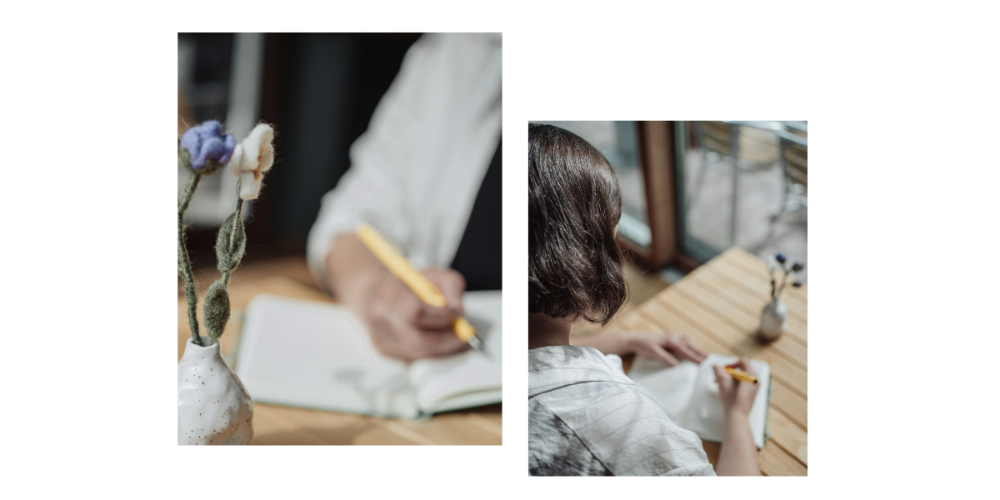

Guía Carmona 2026 │ Fotos: Marie Piekatz
Dear Notes ist ein Projekt, das sich einer einfachen Praxis widmet: darauf zu achten, wie wir notieren.
Nicht nur die Werkzeuge oder das System, sondern der Akt selbst: an wen wir schreiben, was wir bewahren wollen, wozu eine Notiz überhaupt dient.
Die Frage entstand aus zwei Erfahrungen: dem Unterrichten von Wissensmanagement, wo ich immer wieder beobachtete, wie das System zur eigentlichen Arbeit wurde, und dem Übersetzen, das mich lehrte, dass Form nie neutral ist: Wie man schreibt, bestimmt, was man denken kann.
Was ich glaube
Bei der Wissensarbeit geht es nicht darum, das perfekte Werkzeug zu finden oder das perfekte System aufzubauen. Es geht darum, eine nachhaltige Praxis zu entwickeln, die mit dem eigenen Denken wächst. Das Gefährliche ist nicht, Aufgaben abzugeben, sondern das Denken selbst auszulagern.
Ich denke an Notizen als Wissensspeicher: nicht nur als Aufzeichnungen, sondern als Formen, die prägen, was wir denken können. Ein Brief an einen geliebten Menschen, eine Erinnerung, die festgehalten wird, damit sie nicht verloren geht, eine Frage, die lange genug offen bleibt, um sich weiterzuentwickeln.
Gutes Notieren ist so etwas wie ein Handwerk: etwas, das man durch Tun lernt, das mit einem wächst, das dem eigenen Denken dient, nicht der Idee, produktiv zu sein. Das Interessanteste, worüber wir Notizen machen können, ist nicht Information. Es ist die Frage, wie wir leben wollen.
Zentrale Ideen
- Notieren als Praxis der Aufmerksamkeit, nicht nur als Weg, Informationen zu speichern
- Wissensspeicher: wie die gewählte Form bestimmt, was wir denken können, und was sie verbirgt
- Die drei Illusionen des zeitgenössischen PKM: das perfekte Werkzeug, gesteigerte Kreativität, Produktivität als Ersatz für Denken
- Was verloren geht, wenn die Praxis zum System wird: Neugier, Freude, ein Grund, etwas wissen zu wollen
- Prozess über Produkt, Handwerk über Optimierung
- Lernen, mit Ungewissheit umzugehen, statt Systeme zu bauen, die versprechen, sie zu beseitigen
Ich freue mich, von dir zu hören. Du kannst mich über Kontakt erreichen, den Digitalen Garten oder meine Angebote erkunden, oder mehr über mich lesen.